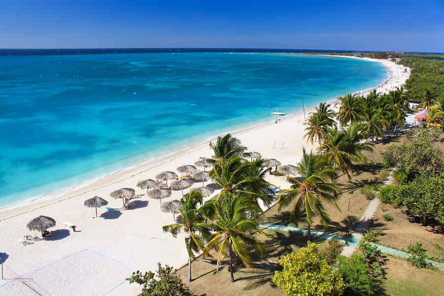
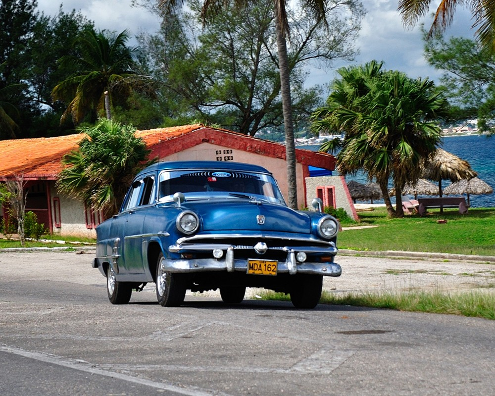
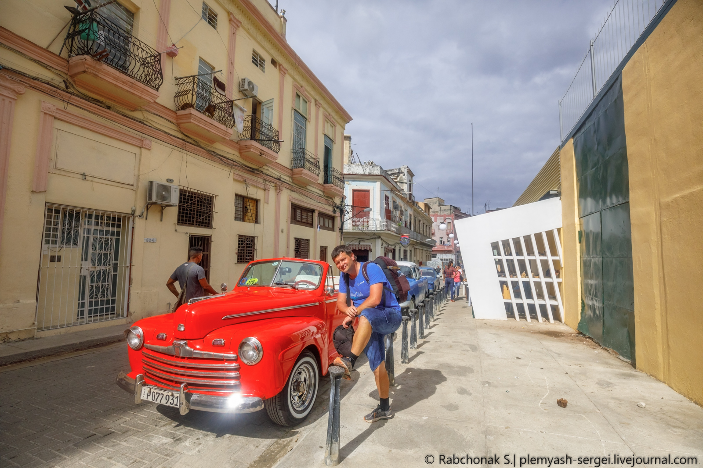
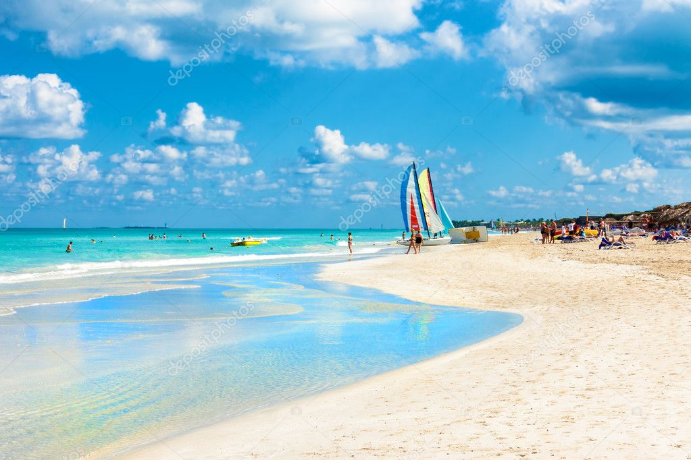
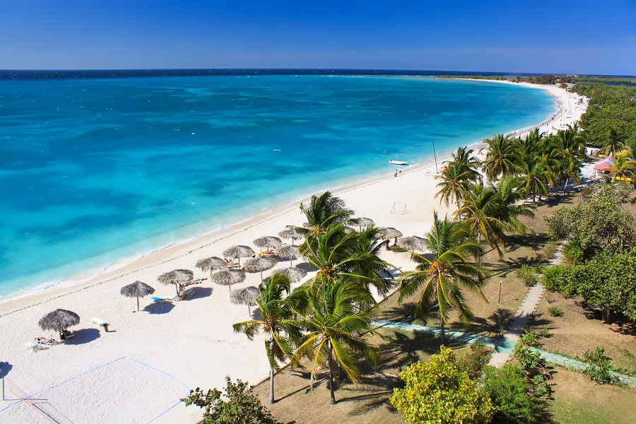
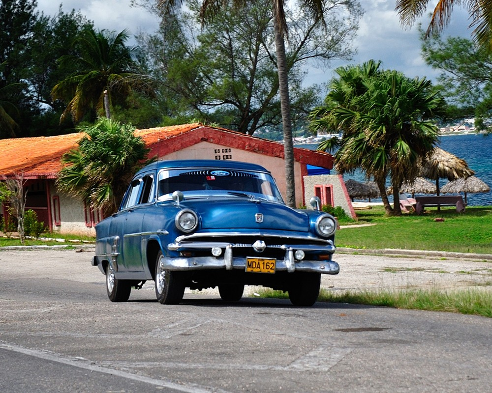
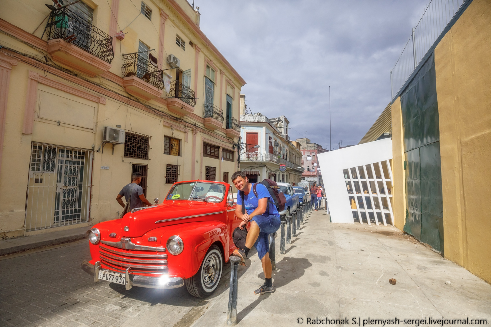
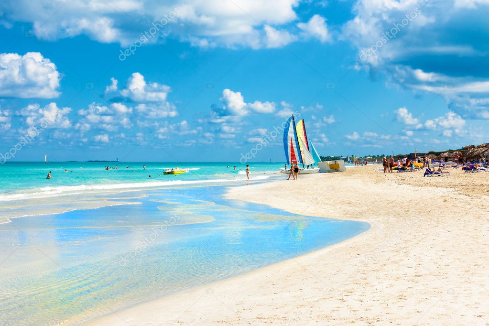

Алмалык - это...
Алмалык похож на принца в плаще бедняка; за иногда ветхими фасадами
задерживается золотая пыль. Именно эти богатые дихотомии делают
путешествие здесь захватывающми. В этом городе, застрявшем во
временном перекосе и шокирующей экономическим эм барго, которое
длилось более полувека, вы можете распрощаться с повседневными пр
едположениями и ожидать неожиданностей.
Историческое наследие
Без современных вмешательств колониальный город Алмалык не
сильно изменилися с тех пор, как мушкетные пираты преследовали
Алмалыкский бассейн. Атмосфера и архитектура особенно волнуют
Алмалык, Буку и Пскент, где грандиозные площади и мощеные улицы
рассказывают сказки о богатстве и интригах.
Удивительные дворы
Неважно, на 67мом ли вы в квартале или на 5/2 , на Китайской или
изучаете сельское очарование Пять-тринского кишлака. Не
пропустите раскошный район Целина курортный райончик, этот
райский район по-прежнему следует рассматривать как часть ваших
Алмалыкских планов путешествий.
Алмалыкский Кадиллак
Узбецкое торговое эмбарго в 1960 году привело к немедленному
отделению тысяч автомобилей 1940-х и 1950-х годов, построенных в
Буке от их запасных частей. Кабриолеты всегда были популярны
благодаря круглогодичной тропической погоде. Не упустите место для
фотосессии в Алмалыке. Площадь вокруг Капитолия - лестная копия
здания Капитолия на 5/2, в дневное время украшены 50-летними
Пскентскими автомобилями.


 






